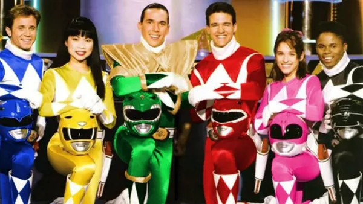
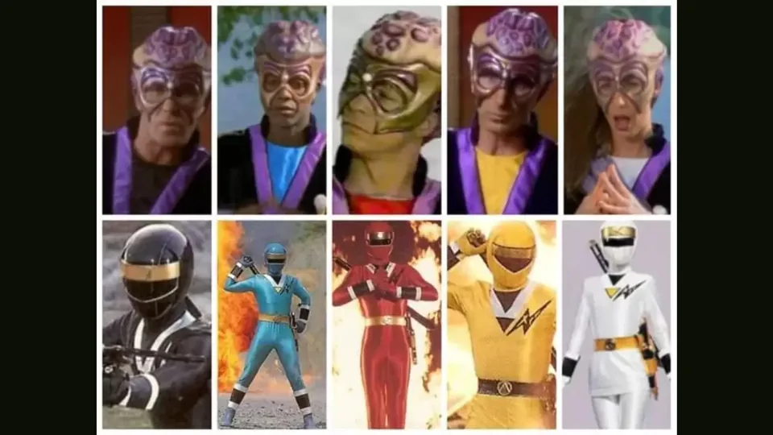
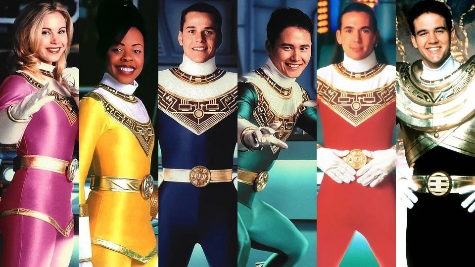
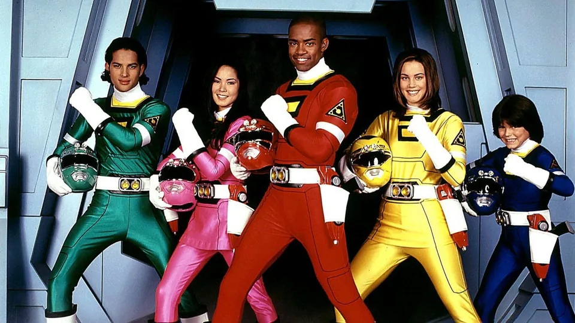
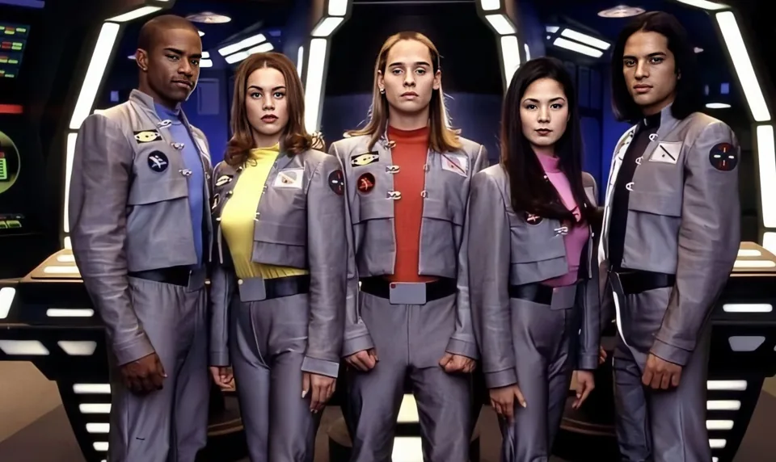

A franquia Power Rangers é simplesmente gigante e conta com diversas séries desde 1993, quando estreou com a primeira saga: Mighty Morphin. Desde então, mais de 20 fases foram lançadas da equipe, e sabemos que é um tanto quanto complexo se localizar em 31 anos — e contando! Dito isso, o IGN Brasil preparou um guia com todas as sagas, temporadas, episódios e atores da aventura que começou lá na Alameda dos Anjos. Conheça abaixo e nunca mais se perca nessa aventura:
Guia de séries, temporadas, episódios e equipes de Power Rangers
Mighty Morphin Power Rangers (1993-1995)
Exibição original:
28 de agosto de 1993 a 27 de novembro de 1995 (145 episódios)
- Ranger Vermelho - Jason Lee Scott (Austin St. John)
- Ranger Preto - Zack Taylor (Walter Jones)
- Ranger Azul - Billy Cranston (David Yost)
- Ranger Amarela - Trini Kwan (Thuy Trang)
- Ranger Rosa - Kimberly Ann Hart (Amy Jo Johnson)
- Ranger Verde - Tommy Oliver (Jason David Frank)
Mighty Morphin Alien Rangers (1996)
Exibição original:
5 a 17 de fevereiro de 1996 (10 episódios)
- Ranger Aquitar Vermelho - Aurico (David Bacon)
- Patrulheiro Aquitar Branco - Delfina (Rajia Baroudi)
- Patrulheiro Aquitar Azul - Cestro (Karim Prince)
- Ranger Aquitar Amarelo - Tideus (Jim Gray)
- Patrulheiro Aquitar Preto - Corcus (Alan Palmer)
Power Rangers: Zeo (1996)
Exibição original:
5 a 17 de fevereiro de 1996 (10 episódios)
- Zeo Ranger V Vermelho - Tommy Oliver (Jason David Frank)
- Zeo Ranger IV Verde - Adam Johnny (Yong Bosch)
- Zeo Ranger III Azul - Rocky DeSantos (Steve Cárdenas)
- Zeo Ranger II Amarelo - Tanya Sloan (Nakia Burrise)
- Zeo Ranger I Rosa - Katherine Hillard (Catherine Sutherland)
- Ranger Zeo Dourado - Jason Lee Scott Tom (Austin St. John)
Power Rangers: Turbo (1997)
Exibição original:
19 de abril a 24 de novembro de 1997 (45 episódios)
- Turbo Ranger Vermelho - Tommy Oliver (Jason David Frank), T.J. Johnson (Selwyn Ward)
- Turbo Ranger Azul - Justin Stewart (Blake Foster)
- Turbo Ranger Verde - Adam Park (Yong Bosch), Carlos Vallerte Johnny (Roger Velasco)
- Turbo Ranger Amarela - Tanya Sloan (Nakia Burrise), Ashley Hammond (Tracy Lynn Cruz)
- Turbo Ranger Rosa - Katherine Hillard (Catherine Sutherland), Cassie Chan (Patricia Ja Lee)
- Phantom Ranger - Ali Afshar
Power Rangers: No Espaço (1998)
Exibição original:
6 de fevereiro a 21 de novembro de 1998 (43 episódios)
- Ranger Espacial Vermelho - Andros (Christopher Khayman Lee)
- Ranger Espacial Negro - Carlos Vallerte (Roger Velasco)
- Ranger Espacial Azul - T. J. Johnson (Bairro Selwyn)
- Ranger Espacial Amarelo - Ashley Hammond (Tracy Lynn Cruz)
- Ranger Espacial Rosa - Cassie Chan (Patricia Ja Lee)
- Ranger Espacial Prateado - Zhane (Justin Nimmo)